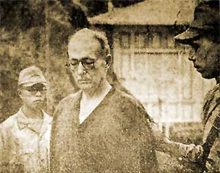

|
j
a v a s c r i p t |
August 6, 1943

Straughn Captured
La Vanguardia: "P.I. Guerrilla Chief Captured." Hugh Straughn is pictured looking down gravely as a Japanese soldier holds him. The caption says he lost 70 pounds while in the mountains of nearby Laguna province. He looks sturdy for his 64 years of age, balding with thinning gray hair. The article accuses him of every crime imaginable, and says he went to the mountains to protect his very rich mines. The consensus here is that the Japanese are confusing him with a fellow named "Strong," who in contrast to Straughn, did make a fortune in mining. Asked how the shift from Democracy to the spirit of Co-Prosperity could be effected, Laurel answered: I do not know what you mean by democracy. If you refer to the spectacular pronouncement of President Lincoln of 'a government of the people, by the people and for the people,' there has never been such a government other than the Athenian democracy. I personally do not want the Americans to come back ... because I love independence and because I do not want to see the Philippines turned into a battleground. He speaks for himself, knowing that when the Americans return, his goose will be cooked — and by his own countrymen. |
|
|
|
|